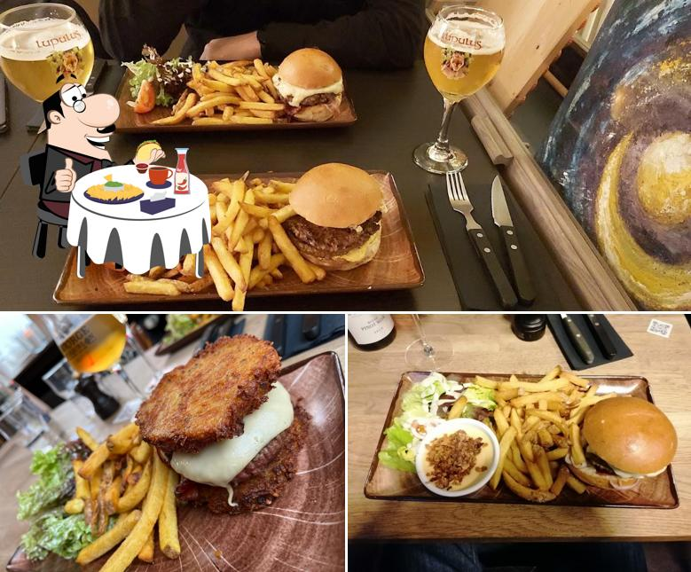

Le Café
Une adresse de légende, au cœur du Belair.
Niché dans les rues calmes et verdoyantes du quartier Belair à Luxembourg-Ville, le Café Bel Air est devenu l'une des adresses les plus appréciées de la capitale. Les menus arrivent écrits sur de vieux comics, le patron passe de table en table, et la salle vibre d'une atmosphère chaleureuse que seule une cuisine sincère peut créer. Tout est fait maison : steaks hachés frais issus de producteurs locaux, frites dorées, pains artisanaux et irrésistibles desserts signés Pain de Mary.
Burgers faits main
Steaks hachés frais de producteurs locaux, pains artisanaux et frites dorées — tout préparé sur place, chaque jour.
L'âme du quartier
Le patron de table en table, des menus écrits sur de vieux comics : une atmosphère chaleureuse que seule une cuisine sincère peut créer.
Desserts Pain de Mary
Brownies, tartes citron et gâteaux chocolat signés Pain de Mary — l'artisanat jusqu'au bout du repas.